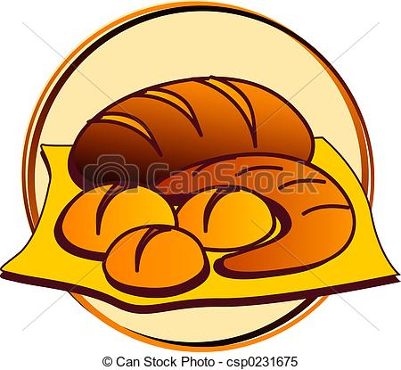

| Datum | Naam activiteit | Details |
|---|---|---|
| 26/09/2016 | Bakkerij DeFreyne  | Sint Annalaan 112 1853 Strombeek-bever België maakt allerlei lekkere gebakkjes |
| 3/10/2016 | Logo gemaakt voor mijn bakkerij | De logo is EXTRA |
| 7/10/2016 | Alle gegevens verzameld over bakkerij | |
| 10/10/2016 | eindelijk een persoon gevonden voor de interview | uitwerking van de interview |
| 12/10/2016 | Oefenen om de website succesvol uit te werken | tutorials op Codecademy gevolgd |
| 16/10/2016 | Lay-out van mijn website mooier gemaakt | verder Codecademy gevolgd |
| 25/10/2016 | Herhaling van verschillende oefeningen | les 6 herbekeken |
| 31/10/2016 | lessen verder blijven volgen op Codecademy | lessen herhaald |
| 7/11/2016 | Alles wat ik geleerd heb terugmaken | mijn repository in orde brengen |